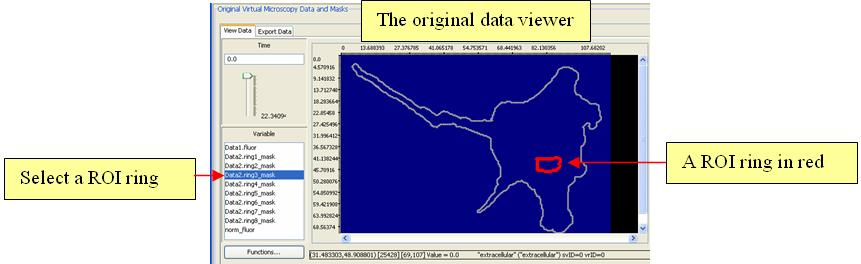

- How a diffusion rate works in different regions (ROI rings) in the cell?
- How different diffusion rates work in a same region?
The spatial analysis results are displayed as nine plots in “Report” panel. Each plot shows how a specific diffusion rate performs in different ROI rings. Both original data and recovery fit curve are available for comparison. The ROI rings can be seen from the original data in “Fit Spatial Model” panel. (Figure 3-8 shows the ROI rings)
“Show Plot List” checkbox enables users to make variable names visible or invisible for every plot.

Figure 3-7: Spatial Analysis in Virtual Frap

Figure 3-8: Viewing a ROI Ring in Virtual Frap
Figure 3-8: Viewing a ROI Ring in Virtual Frap